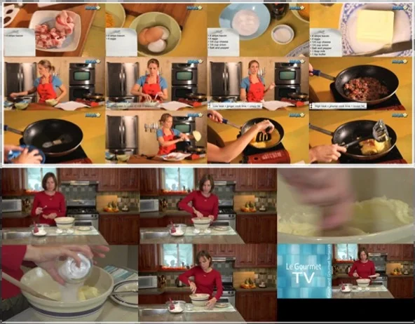
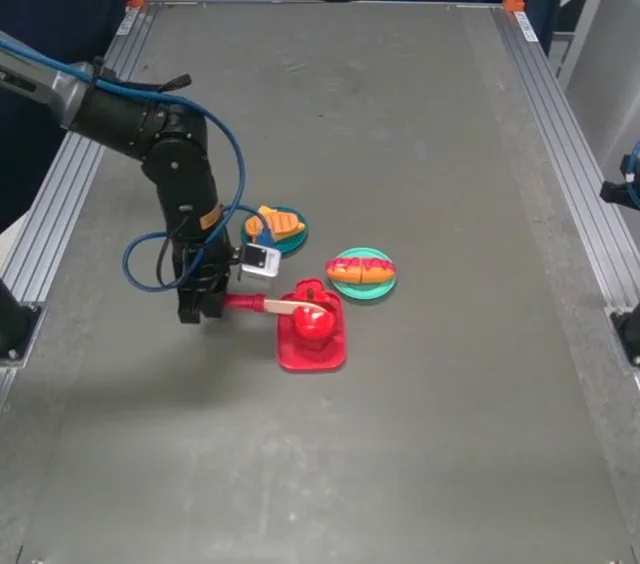
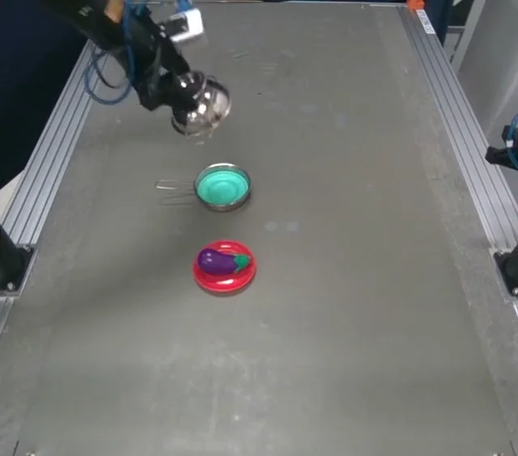
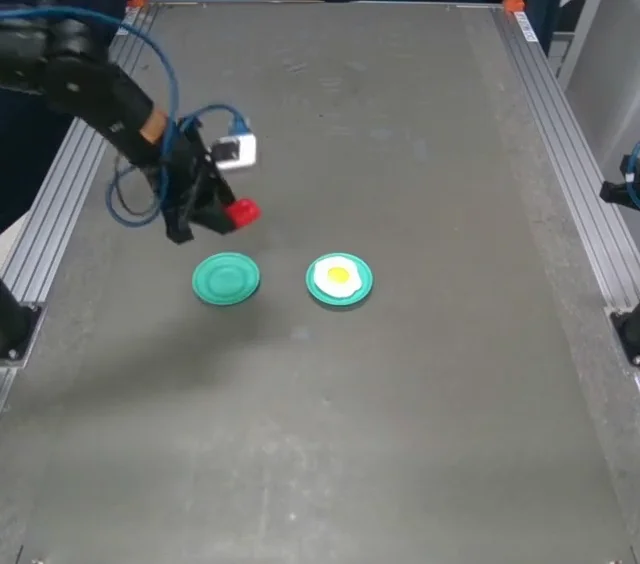

01 Mapping
Object and action mapping
Each human object is mapped to the most similar robot object by LLM-scored similarity, and each human verb to a robot skill by a deterministic lookup (e.g., add → place), giving the initial plan A1.
1University of Oxford 2Mitsubishi Electric Research Laboratories
An agentic feedback loop in which vision-language models compare the robot's execution
with the human video and correct the plan.
Human instructional videos describe long-horizon tasks such as cooking, but translating the extracted steps into robot-executable actions remains challenging, as the robot's workspace, objects, and skills differ from those in the video. We present KitchenVLM, a multimodal framework that corrects such plans through an agentic feedback loop, where vision-language models (VLMs) serve as evaluators and planners.
KitchenVLM maps the steps extracted by a multimodal LLM to robot skills, executes them while recording observations, and compares the robot's observations with keyframes of the human video. The detected mismatches in object state, action feasibility, and sequence logic are passed to an LLM planner, which inserts, replaces, or reorders steps and recomposes a corrected plan. We evaluate KitchenVLM on YouCook2 cooking videos in simulation and on a real robot arm, where the corrected plans are more complete and executable than the initial ones, and both the textual steps and the human keyframes contribute to the correction.
KitchenVLM is a robot-in-the-loop framework. It grounds the steps of a human video into an initial robot plan, executes the plan while collecting feedback, and corrects it by comparing the robot's observations with the human video.

Object and action mapping
Each human object is mapped to the most similar robot object by LLM-scored similarity, and each human verb to a robot skill by a deterministic lookup (e.g., add → place), giving the initial plan A1.
Robot execution with feedback collection
The robot, simulated or physical, executes A1 and records an observation image and the execution outcome after every step, e.g., whether the step was executed and what the gripper holds.
VLM evaluation and LLM replanning
A VLM compares each robot observation with a keyframe of the human video and reports the domain gap. An LLM corrects each step window, then recomposes the sub-sequences into the corrected plan A2.
Sources of mismatch: object condition mismatch (e.g., a whole vs. a sliced tomato, a closed vs. an open pot), robotic action limitation (a step is ambiguous or not a robot skill), and logical inconsistency (e.g., placing an object before picking it with a single arm).
Simulation runs in RoboCasa with a Franka Panda arm on 867 YouCook2 videos whose actions are covered by the robot's skills. GPT-4o serves every LLM and VLM function.
Human cooking steps use a long-tailed vocabulary of verbs. The five most frequent verbs cover 92% of all steps; the remaining 99 verbs account for 8.0%. The robot's skill library covers only a small part of this vocabulary, which motivates mapping followed by correction.


LLM and VLM judges score plans on a five-level scale from Reject (0) to Accept (1). Both judges rate the corrected plan higher than the initial plan, also when only executable plans are scored (VLM*). Removing the textual steps (w/o S) or the human keyframes (w/o I) lowers every score.
| Judge | A1 (initial) | A2 w/o S | A2 w/o I | A2 (ours) |
|---|---|---|---|---|
| LLM (G, A) | 0.45 | 0.25 | 0.56 | 0.67 |
| VLM (G, I0, A) | 0.35 | 0.30 | 0.58 | 0.65 |
| VLM* (G, I0:n) | 0.36 | 0.46 | 0.53 | 0.64 |
| VLM* (G, I0:n, A) | 0.38 | 0.28 | 0.49 | 0.62 |
| Plan | Burger | Sandwich | Fried chicken | Avg. |
|---|---|---|---|---|
| A1 (initial) | 0.52 | 0.53 | 0.44 | 0.50 |
| A2 (ours) | 0.61 | 0.63 | 0.57 | 0.61 |
| All 867 clips | 357 aligned clips | |||||
|---|---|---|---|---|---|---|
| BLEU-4 | METEOR | TCR | BLEU-4 | METEOR | TCR | |
| Ours | 0.705 | 0.503 | 0.28 | 0.720 | 0.526 | 0.29 |
| w/o S | 0.230 | 0.278 | 0.03 | 0.211 | 0.274 | 0.03 |
| w/o I | 0.633 | 0.485 | 0.23 | 0.643 | 0.500 | 0.25 |
Without textual steps TCR drops to 0.03, as the text provides the order and structure of the task; without keyframes the drop is milder. All metrics improve on the clips with aligned keyframes, showing that keyframe selection matters.

The same pipeline runs on an AgileX PiPER arm with a parallel gripper and an overhead Intel RealSense D405 camera. The skill library is {pick, place, cut}; each skill is one teleoperated demonstration replayed open-loop between shared ready poses. Toy food replaces real ingredients. We select three YouCook2 clips that cover two sources of mismatch.
Object condition mismatch
The human stacks tomato slices; the robot has a whole tomato, a knife, and a cutting board.
Object condition mismatch
The human puts potatoes into an open pot; the robot's pot is closed by a lid.
Logical inconsistency
The annotated steps place the cheese before picking it.

For each task, A1 is executed in 10 physical trials, and corrections are computed offline from the saved observations, so that every variant sees identical robot data. KitchenVLM raises the predicate fulfillment from 0.08 to 0.88 on average and outperforms every ablation.
The three tasks require increasingly rich feedback. Burger is solved by the execution outcome alone. Pot requires the robot image, which shows the lid. Sandwich is the only task where the missing information, that the tomato must be sliced, is visible only in the human video: without the keyframe, no correction inserts the cutting steps (0/30), whereas the full method does so in 15/30.
| Plan | Burger | Pot | Sandwich | Avg. |
|---|---|---|---|---|
| A1 (initial) | 0.00 | 0.00 | 0.25 | 0.08 |
| A2 w/o S | 0.50 | 0.00 | 0.50 | 0.33 |
| A2 state-only | 1.00 | 0.00 | 0.33 | 0.44 |
| A2 w/o I | 1.00 | 0.97 | 0.25 | 0.74 |
| A2 (ours) | 1.00 | 1.00 | 0.62 | 0.88 |
Mean over 10 trials; full and w/o I: 3 corrections per trial.


Executing the corrected plans A2 on the real robot (Fig. 6). Red labels mark steps inserted or reordered by KitchenVLM.
Overhead-camera recordings of the corrected plans A2 executed on the real robot, at real-time speed.

VideoReal robot · 7 steps
Pick knife, cut tomato, place knife, then stack the slice and the bread.

VideoReal robot · 4 steps
Remove the lid first, then put the eggplant into the pot.

VideoReal robot · 2 steps
Pick the sausage before placing it on the fried egg.